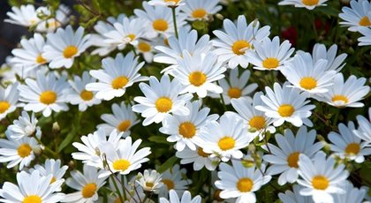

Papatya

Söyleyeceklerime dikkat et.
Şehrin dışında, kırlara giden yolun hemen kenarında bir kır evi vardır.
Bir zaman mutlaka sen de görmüşsündür onu. Önünde parmaklıkları güzelce boyalı bir çiçek bahçesi vardır.
Bahçenin hemen yanı başındaki hendeğin kenarında bol yeşil otlar arasında bir papatya vardı.
Güneş, ışığını bahçenin içindeki iri, muhteşem çiçeklere nasıl veriyorsa ona da veriyordu.
Onun için gün günden gözle görülürcesine büyüdü, gelişti.
Bir sabah papatya göbeğinde parlayan kendi güneşinin çevresinde
fırdolayı ışınları andıran parlak beyaz yapraklarıyla iyice açılmıştı. İnsanlar arasında kimsenin onu fark etmediğini,
kendisinin hor görülen, zavallı bir çiçekçik olduğunu aklına bile getirmiyordu. Hayır, aksine, neşe içindeydi. Tam o sırada
yüzünü sıcak güneşe doğru çevirmiş, yukarıya, ona doğru bakıyor, havalarda şakıyan tarla kuşunu dinliyordu.
Papatya kendini o kadar bahtlı hissediyordu ki, sanki o gün en büyük bayram günüydü. Hâlbuki günlerden pazartesiydi, bütün çocuklar okuldaydı.
Çocuklar okulda sıralarında oturmuş, derslerini öğrenirlerken papatya da kendi küçücük sapı üstünde oturuyor, o da sıcak güneşle çevresindeki
her şeyden, Tanrının ne kadar iyi olduğunu öğreniyordu. Küçük tarla kuşunun sessizce içinde duyduğu her şeyi bu kadar güzel,
bu kadar açık şakıması, ona gayet tabii geliyordu. Papatya şakıyan, uçabilen tarla kuşuna bir çeşit derin saygı duygusu içinde bakıyor,
kendi de aynı şeyleri yapmadığı için üzülmüyordu. Görüyor, işitiyorum ya, diyordu kendi kendine, güneş beni aydınlatıyor, rüzgâr da öpüyor.
Ne büyük kabiliyetler verilmiş bana. Tahta perde ile çevrilmiş çitin içinde, birçok kibirli, kibar çiçekler vardı. Kokuları
ne kadar azsa başlarını o ölçüde havaya kaldırıyorlardı. Güneş çarkları güllerden daha iri, görünmek için kabarıp böbürleniyorlardı.
Ama dış büyüklüğün büyük bir önemi yoktu ki. En güzel renkler lâlelerde vardı, bunu bildikleri için de başlarını mum gibi havaya dikmişler,
herkese kendilerini
göstermek istiyorlardı. Az önce açılmış olan papatyayı hiçbiri görmüyordu bile, hâlbuki papatya da onları seyrediyor, kendi kendine şöyle diyordu:
"Ne kadar zengin, ne kadar güzel bu çiçekler! En göz alıcı kuşlar hiç şüphesiz onlara gelir, onları ziyaret eder. Onlara bu kadar yakın olduğum için
Tanrıya şükürler olsun. Bu güzellikleri o sayede görebiliyorum."
Papatya tam bunları düşünürken tarla kuşu "cik! cik!" diye öterek uçup geldi.
Ama güneş çarkıyla lâlelerin yanına değil, hayır, çimenler içindeki zavallı papatyanın yanına indi. Papatya bunu görünce sevincinden
o kadar korktu ki, ne diyeceğini şaşırdı kaldı.
Küçük kuş papatyanın etrafında dans ediyor, şöyle şakıyordu: "Çimenler ne kadar yumuşak,
şu kalbi altın, elbiseleri gümüş güzeller güzeli çiçeğe bak!"
Papatyanın yaprakları ortasındaki sarı noktacık altın, çevresindeki
gümüş yapracıklar da gümüş gibi parıldıyorlar.
Papatya çok mesuttu. Hayır, çok değil, tasavvurun üstünde mesuttu. Tarla kuşu onu
gagasıyla öpüyor, arkasından tekrar mavi göğe havalanıyordu. Papatyacığın tekrar kendine gelebilmesi için tam bir çeyrek saat geçmesi gerekiyordu.
Yarı utanarak, ama içinden neşeli neşeli, bahçe içindeki çiçeklere baktı.
Bunlar papatyanın gördüğü itibarı, yaşadığı saadeti görmüşler,
bunun ne kadar güzel bir şey olduğunu da biliyorlardı. Ama lâleler, az önce olduğu gibi tekrar başlarını yukarı kaldırdılar. Yüzleri gergin,
renkleri kıpkırmızı olmuştu, çünkü öfkelenmişlerdi. Güneş çarkları çok inatçı idiler. Konuşmamaları da çok iyi oluyordu. Çünkü konuşmalar
papatyaya işin doğrusunu, gerçeği olduğu gibi söyleyeceklerdi. Zavallı papatyacık onların neşesi kaçtığını gayet iyi görüyor, buna gerçekten üzülüyordu da.
Tam bu sırada elinde keskin parıltısı ta uzaklardan görülen bir bıçakla bir kız bahçeye girmişti. Lâlelerin ırasından yürüyor, bunları birbiri ardından kesiyordu.
Papatya "Ah!" diye içini çekti. "Korkunç şey bu, mahvoldular işte! "Kız topladığı lâlelerle çıkıp gitti. Papatya dışarıda çimenler arasında bulunduğuna,
yalnız zavallı bir çiçekten ibaret olduğuna seviniyordu şimdi.
İçinde büyük bir şükür duygusu vardı.
Akşam güneş batarken yapraklarını büzdü, uykuya daldı. Düşünde de bütün gece güneşi, küçük kuşu gördü.
Sabah olup da papatya bütün beyaz yapraklarını tekrar küçücük kollar gibi havaya doğru uzattığı zaman, dün öten kuşun sesini duymuş, tanımıştı,
Ama çok gamlı bir şeyler şakıyordu. Zavallı tarla kuşunun kederlenmeye hakkı vardı, çünkü onu yakalamışlar, bir kafese koymuşlardı.
Şimdi açık pencerenin yanında duruyordu. Hür, mesut, istediği yere uçabilmenin eşsiz güzelliğini şakıyordu. Tarlalarda yeni süren taze,
yeşil filizleri, kanatlarını açarak havalarda yapabileceği yolculukların güzelliklerini şakıyordu. Zavallı kuşcağız çok neşesizdi,
tutsak etmişlerdi onu, şimdi bir köylü evindeydi. Papatya kuşcağıza yardım etmeye can atıyordu, ama bunu nasıl yapabilirdi?
Bunun için en doğru yolu seçebilmek zor bir işti. Etrafındaki bütün güzellikleri, güneşin sıcaklığını, kendi yapraklarının en kadar ihtişamlı parıldadığını
iyice unutmuştu. Ah onu yalnız düşünebilir, ona hiç bir yardımda bulunamazdı.
Tam o sırada iki küçük oğlan çocuğu bahçeden çıkıp geldiler.
Birisinin elinde bir bıçak vardı, hem de o genç kızın az önce lâleleri kestiği bıçak kadar büyük, onun kadar keskin bir bıçak.
Doğrudan doğruya papatyanın üstüne doğru yürüyorlardı. Çiçek bunların ne yapmak istediğini kavramıştı.
Çocuklardan biri:
"İşte buradan tarla kuşu için bol bol ot biçebiliriz" dedi, papatyanın çevresindeki dörtgen şeklinde bir yeri biçmeye başladı.
Otları ta diplerinden kesiyordu, bu yüzden papatya biçilmiş yerin ortasında ayakta kalmıştı.
"Kopar at çiçeği" dedi öteki oğlan.
Papatya korkudan ürpertiler geçiriyordu. Çünkü koparılmak demek, ölmek demekti. Hâlbuki tam şimdi adamakıllı yaşamak isterken,
biçilmiş otlarla birlikte tutsak edilen tarla kuşunun kafesine gidecekti.
"Hayır, bırak otların arasında, dedi öteki oğlan,
o kadar güzel süslüyor ki onları" Böylece
papatya otların arasında kaldı. Onlarla birlikte tarla kuşunun kafesine gitti.
Ama zavallı tarla kuşu kaybettiği hürriyeti için ağlayıp
sızlanıyor, kuşçu köylünün etrafına çevirdiği tel örgülere kanatlarını çarpıp vuruyordu. Papatya konuşamazdı, o kadar istediği halde kuşa
bir tek teselli sözü söyleyemiyordu.
Bütün öğleden öncesi böyle geçti.
Tutsak tarla kuşu: "Burada su yok, diyordu, evdekilerin hepsi çıkıp gitti,
bana bir damla su koymayı unuttular. Boğazım kurudu, ateş gibi yanıyor; kimi sıcaktan tutuşuyor, kimi de soğuktan titriyorum.
Üstelik hava da ağır ki! Ah mutlaka öleceğim ben, sıcak gün ışığından, taze çimenlerden, Tanrının yarattığı bütün güzelliklerden ayrılacağım mutlaka!"
Bunu söyleyerek bir parçacık serinlemek için gagacığını etrafındaki serin otların arasına soktu. Birdenbire gözüne papatya ilişmişti.
Onu görünce selâmladı, gagasıyla çiçeği öperek: "Sen de burada solmaya mecbursun, dedi papatyaya. Zavallı çiçekçik, dışarıda benim olan bütün bir
dünyaya karşılık bana seninle o çayır parçasını biçip verdiler. Buradaki her ot sapı benim için yeşil bir ağaç, senin beyaz yapraklarından
her biri kokulu bir çiçek yerine geçecek. Ah, neler kaybettiğimi siz söyleyin bana yalnız!"
Papatya kendi kendine, onu kim teselli edebilir,
diye düşünüyordu. Ama hiçbir yaprağını kımıldatamıyor, yalnız onlardan yayılan koku, öteki bütün çiçeklerin kokularından daha kuvvetli geliyordu ona.
Kuş da bunun farkındaydı, susuzluktan inlemesine, korkusundan yeşil ot saplarını koparmasına rağmen papatyaya hiç dokunmuyordu.
Akşam olmuştu.
Ortalıkta henüz kimseler görünmüyordu. Gene zavallı kuşcağıza bir damla su veren olmamıştı. O zaman tarla kuşu, güzel kanatlarını yaydı,
bütün vücudu bir kere daha sarsıldı, söylediği bütün şarkı acılı bir "cik! cik!" den ibaret kaldı. Başını çiçeğe doğru eğerek susuzluktan,
hürriyet hasretinden son nefesini verdi. Papatya bir akşam önce olduğu gibi yapraklarını büzemiyor, uykuya dalamıyordu. Hasta,
yaslı bir halde kendini yere bırakmıştı.
Çocuklar ancak ertesi sabah geldiler. Kuşu ölmüş görünce ağlamaya başlamışlardı. Bir çok sıcak göz yaşı döktüler. Sonra ona küçük, sevimli
bir mezar hazırladılar. Üstünü de çiçek yapraklarıyla donattılar. Arkasından kuşun ölüsünü kırmızı, güzel bir kutunun içine yerleştirdiler.
Onun bir kral gibi gömülmesi lâzımdı. Öyle de yaptılar. Zavallı tarla kuşu, henüz yaşar, şakırken onu ikisi de unutmuş, köylünün yanına
bırakmışlar, zavallıcığa o kadar acı çektirmişlerdi ki... Şimdi onun için büyük fedakârlıklar yapıyor, arkasından bol bol gözyaşı döküyorlardı.
Ama papatya ile biçilen otları, dışarıya, kır yolunun tozları içine attılar. Kuş için en çok duygulanan onu en çok teselli etmek isteyen papatyayı da
artık kimse hatırlamadı bile.